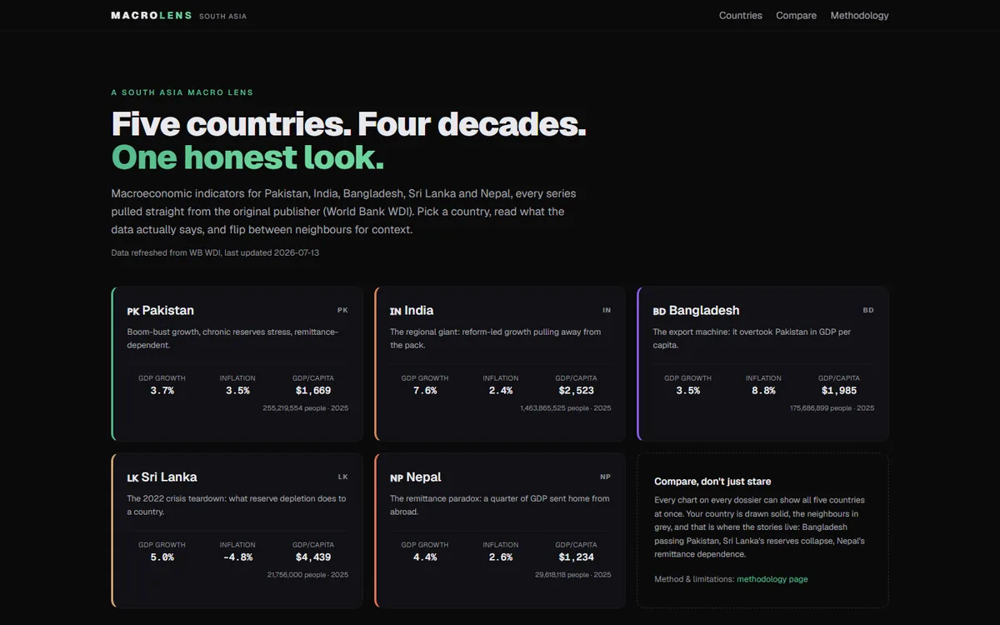

LIVE
next.js · static · wdi
Macro Lens
Five countries. Four decades. One honest look. Macroeconomic dossiers for Pakistan, India, Bangladesh, Sri Lanka, and Nepal, every series pulled straight from the World Bank's WDI. Finding-first: the chart answers a question, not just a metric.